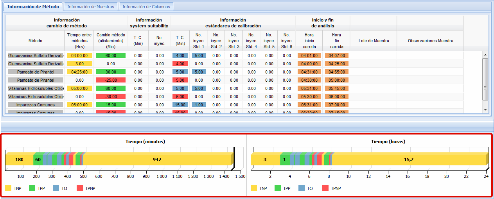

MANUAL DE USUARIO
TPM-QLabs - INGRESO DATOS
La interfaz
para el ingreso de datos de corridas analíticas se encuentra
disponible para todos los usuarios con perfil Administrador,
Analista y Coordinador o Supervisor. Para cada usuario
según su perfil, existen una serie de permisos y limitaciones
respecto al ingreso y modificación de los datos, tal y como se
describe en cada uno de los siguientes puntos los cuales hacen
parte de los pasos a seguir para el registro de una corrida
analítica.
Seleccionar el Analista
El usuario con perfil Administrador y Coordinador tienen a su disposición la información de las corridas analíticas registradas por todos los analistas. Si requieren acceder a la información de un analista específico, se debe seleccionar de la lista de analistas registrados en el sistema el nombre del analista de su interés, tal y como se muestra en la Figura 1. En caso de querer acceder a la información registrada por todos los analistas, debe seleccionar la opción TODOS.
El usuario con perfil Analista puede acceder sólo a la información registrada por el mismo. Por tal razón, en el campo Analista se visualiza sólo el nombre del analista que ha iniciado sesión, tal y como se muestra en la Figura 2.
Figura 1. Selección del Analista por un usuario Administrador ó Coordinador
Figura 2. Nombre del analista que inicia sesión
Seleccionar el Analista
El usuario con perfil Administrador y Coordinador tienen a su disposición la información de las corridas analíticas registradas por todos los analistas. Si requieren acceder a la información de un analista específico, se debe seleccionar de la lista de analistas registrados en el sistema el nombre del analista de su interés, tal y como se muestra en la Figura 1. En caso de querer acceder a la información registrada por todos los analistas, debe seleccionar la opción TODOS.
El usuario con perfil Analista puede acceder sólo a la información registrada por el mismo. Por tal razón, en el campo Analista se visualiza sólo el nombre del analista que ha iniciado sesión, tal y como se muestra en la Figura 2.
Figura 1. Selección del Analista por un usuario Administrador ó Coordinador
Figura 2. Nombre del analista que inicia sesión
Seleciconar el Equipo
Debe
seleccionar de la lista de equipos registrados en el sistema el
equipo que sea de su interés, tal y como se muestra en
la Figura 3.
Figura 3. Selección del equipo.
Agregar
Método
De la lista que despliega los métodos registrados en el
sistema (1), seleccione el método con el cual va a trabajar y
pulse el botón Agregar
Registro (2), tal y como se muestra en la Figura
4.

Figura 4. Selección del método y
agregar registro.
Una vez se haya
seleccionado y registrado el método, en la pantalla se
despliega la información del método en tres pestañas
diferentes: Información de Método, Información de Muestras e
Información de Columas.
En la pestaña Información de Método se muestra y puede ingresar la información correspondiente a cambio de método, system suitability, estándares de calibración, inicio y fin de análisis e información sobre el lote de la muestra y observaciones referentes a la corrida analítica. La pestaña de Información de Método se muestra en la Figura 5.
En la pestaña Información de Método se muestra y puede ingresar la información correspondiente a cambio de método, system suitability, estándares de calibración, inicio y fin de análisis e información sobre el lote de la muestra y observaciones referentes a la corrida analítica. La pestaña de Información de Método se muestra en la Figura 5.
Figura 5. Pestaña con la
Información del Método.
En la pestaña Información de Muestras se despliega y puede ingresar la información correspondiente al Tiempo de Corrida, Número de lotes y Número de inyecciones por lotes para Producto, Estabilidad, Materia Prima, Pureza Cromatográfica, Disolución y Uniformidad Contenido. La pestaña de Información de Muestras se indica en la Figura 6.
En la pestaña Información de Muestras se despliega y puede ingresar la información correspondiente al Tiempo de Corrida, Número de lotes y Número de inyecciones por lotes para Producto, Estabilidad, Materia Prima, Pureza Cromatográfica, Disolución y Uniformidad Contenido. La pestaña de Información de Muestras se indica en la Figura 6.
Figura 6. Pestaña con la
Información de Muestras.
En la pestaña Información
de Columnas se despliega y puede ingresar la
información correspondiente al código interno de la columna
utilizada en la corrida analítica, la etapa de la columna,
el Tiempo de Retención, los Platos Teóricos, el Factor de
Cola, la Resolución, la Presión del Sistema y alguna
observación referente a la columna utilizada. La
pestaña de Información de Columnas se muestra en la Figura
7.
Figura 7. Pestaña con la
Información de Columnas.
Ingresar datos de la corrida
Debe dar doble clic sobre la
celda que desea modificar, luego debe digitar el número o
seleccionar la hora de acuerdo al campo y dar un clic por fuera
para que la modificación sea guardada en el sistema. Ingrese en
la fila superior los datos estándar o programados según el
método y en la fila inferior ingrese las pérdidas. En la
Figura 8 se muestra el resultado de la edición de varias celdas.
Observe que en la parte inferior de la pantalla hay dos gráficos
que le indicarán la productividad del día en término de minutos
y horas.

Figura 8. Ingreso de corridas analiticasEl usuario con perfil
Administrador puede visualizar la información de todas las
corridas analíticas registradas, puede registrar una corrida
analítica en cualquier fecha y así mismo modificar la
información registrada en cualquier fecha. Cada vez
que un administrador realice la modificación de un dato se
mostrará un cuadro de texto en donde el usuario debe
ingresar la causa de la modificación, tal y como se muestra
en la Figura 9. Si una vez ingresada la causa de la
modificación el usuario pulsa el botón Aceptar,
el cambio se registra en la base de datos pero si el usuario
pulsa el botón Cancelar no
se llevará a cabo ningún cambio.
Figura 9.
Modificar información
El usuario con perfil
Analista puede visualizar la información de todas las
corridas analíticas registradas, puede registrar
una corrida analítica y modificar la información registrada
unicamente de la fecha actual. En caso de intentar
modificar la información de una fecha anterior, el sistema
le mostrará un mensaje indicando que el usuario no está
autorizado para modificar datos cuya fecha de registro
corresponde a días anteriores.
El usuario con perfil Coordinador o Supervisor puede visualizar la información de todas las corridas analíticas registradas pero no puede registrar ni modificar ningún tipo de información ni de la fecha actual ni de fechas anteriores. En caso de intentar llevar a cabo el registro de una corrida analítica o modificar la información de alguna corrida, el sistema le mostrará un mensaje indicando que el usuario no está autorizado para registrar o modificar ningún tipo de información.
El usuario con perfil Coordinador o Supervisor puede visualizar la información de todas las corridas analíticas registradas pero no puede registrar ni modificar ningún tipo de información ni de la fecha actual ni de fechas anteriores. En caso de intentar llevar a cabo el registro de una corrida analítica o modificar la información de alguna corrida, el sistema le mostrará un mensaje indicando que el usuario no está autorizado para registrar o modificar ningún tipo de información.
Eliminación de Inyecciones de los Estándares
Los usuarios con perfil
Administrador y Analista pueden eliminar inyecciones de los
estándares. Cada usuario puede realizar este proceso
de acuerdo con los permisos asociados a cada perfil: el
usuario con perfil Administrador puede modificar los
registros de cualquier fecha y el usuario con perfil
Analista puede modificar los registros de la fecha
correspondiente al último día. Cabe resaltar que el
proceso solo permite la eliminación más no el incremento del
número de inyecciones a los estándares, pero si es posible
variar dicho número siempre y cuando por estándar no se
supere el número de inyecciones con los cuales se encuentra
registrado el método en el sistema.
Figura 10.
Eliminación de los Estándares de Calibración
Reinyecciones
Los usuarios con perfil
Administrador y Analista pueden registrar
reinyecciones. El usuario debe identificar la columna
con el Número de lotes
(1) y la segunda línea del método registrado la cual representa
las pérdidas (2) para luego ingresar el número de
reinyecciones (3). Una vez el usuario haya ingresado
el número de reinyecciones, se despliega la interfaz para la
edición de eventos a fin de que se registre la
reinyección como un evento. El proceso de registro de
una reinyección se describe en la Figura 11.
Figura 11. Registro
de Reinyecciones
División de Registro
Los usuarios con perfil
Administrador o Analista pueden llevar a cabo el proceso de
división de registro. Para llevar a cabo dicho proceso,
el usuario debe dar clic en el botón Dividir
registro (1) y el sistema automáticamente pasará a los
registros de las corridas analíticas del día siguiente las
muestras restantes por analizar o el tiempo restante
correspondiente a alistamientos. Tenga en cuenta que si
el primer registro corresponde a una continuación de una
corrida del día anterior resultante de una división de
registro, el Tiempo
entre cambio de método (2) se registrará
en cero (0.00) pues la máquina viene trabajando en
este método desde el día anterior, tal y como se muestra en la
Figura 12.
Figura 12. División de registro